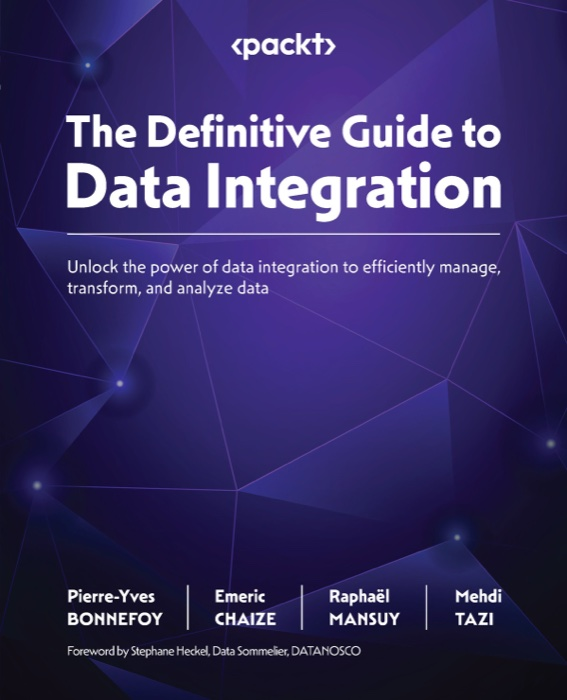

Change SQL on a typed tree, not with string replacement.
EdgeSQL reads a Postgres or Databricks statement, resolves every
column, and edits a copy of the syntax tree. You preview the change, then apply
it. When the change cannot be safe, it stops and names the reason.
A string edit cannot tell a column name from a comment. It cannot tell which
table owns a column. It breaks when two edits touch the same name. EdgeSQL keeps
the parsed tree instead. A rename knows the table, the CTE hops, and the output
name it must keep.
One resolver
Scope and column rules live in one module. Filters, columns, and renames
all read the same answer.
postgres and databricks
Preview before commit
Preview returns the before SQL, the after SQL, an AST diff, a semantic
diff, and a fingerprint. Apply refuses a blocked preview.
no silent change
Fail closed
Every error has a phase, a code, and a hint. The library emits no SQL when
it cannot explain the statement.
22 catalog codes
Dynamic filter screen
The report helper builds its filter panel from the product IR. Every
editable node becomes a control: number, text, range, list, or limit.
works for any query
Install and the flow
pip install edgesql # or: uv add edgesql
python -c "import edgesql, importlib.metadata as m; print(m.version('edgesql'))"
from edgesql import Query
query = Query.parse(
"SELECT cust_id, status FROM sales.orders",
dialect="postgres",
)
preview = query.preview(
lambda item: item.rename_column("cust_id", "customer_id", table="sales.orders")
)
if not preview.blocked:
applied = preview.apply(actor="builder")
print(applied.to_sql())
# SELECT customer_id AS cust_id, status FROM sales.orders
The original query does not change. The rename keeps the output name
cust_id, so a report that reads that column still works.
The filter screen
The example app reads the product IR and builds one row per predicate. A
literal value gets a typed control. A predicate that compares two columns, or
compares against a function, becomes a read-only row, because a value patch would
change the meaning.
Join predicates. The key comparison is read-only. The boolean
comparison is editable.
Raphael is a data engineering and AI strategist with more than 20 years of
global technology leadership experience. He works on democratizing data
management and AI, and helps organizations build scalable data platforms. His
work covers resilient data infrastructure, machine learning models, and
coaching teams on practice. He leads a startup studio in Hong Kong.
EdgeSQL started from one observation: changing SQL with string replacement
breaks as soon as two edits touch the same name. A typed tree with a preview
gate is the smallest honest fix, so he built it and tested it against the
official Postgres and Databricks statements.
Favikon ranks Raphael at 12 in
Top 20 AI Experts in France in 2026, with a Favikon
Authority Score of 7,012 points. The list covers the most visible AI
practitioners in France. The entry cites his 20 years of data and AI
leadership, his work on scalable data platforms, and the startup studio he
leads in Hong Kong.
Source: Favikon, Top 20 AI Experts in France in 2026.

The Definitive Guide to Data Integration
Packt, 2024
Unlock the power of data integration to efficiently manage, transform, and
analyze data. Raphael is a co-author with Pierre-Yves Bonnefoy, Emeric Chaize,
Mehdi Tazi, and Stephane Heckel.
Graph-RAG in Rust: one binary, one Postgres, any LLM. It reads PDFs and
text, builds a knowledge graph in PostgreSQL, and answers questions with
sources. Six retrieval modes: naive, local, global, hybrid, mix, and
bypass. Apache 2.0.
A personal and coding SuperAgent in one native Rust binary, with a
ratatui terminal UI and a ReAct tool loop. It supports 24 LLM providers and
17 messaging gateways. Install with npm install -g edgecrab-cli,
pip install edgecrab-cli, or cargo install edgecrab-cli.
Voice dictation for macOS, powered by Voxtral from Mistral AI. It runs
fully on the device, with no cloud and no data collection. It supports 13
languages, an Apple Silicon Mac, and macOS 14 or later.
Building something with SQL? Tell Raphael about it.